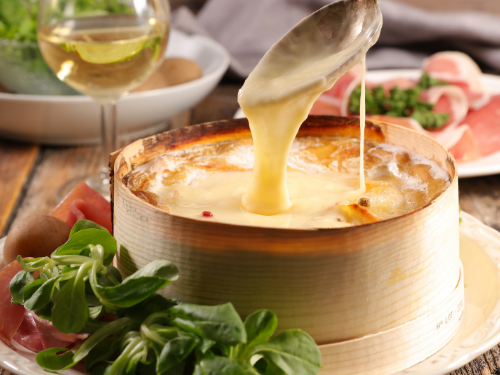

Mont d'or au four

Description
"Mont d'or" in the oven is a traditional Swiss and French dish made with melted cheese,
white wine, and garlic. It is typically served with pieces of bread for dipping.
This warm and comforting dish is perfect for sharing with friends and family during the colder months.
Ingredients for 4 persons
- 1 Mont d'or cheese
- 1 clove of garlic
- 1/2 cup of dry white wine
- 1 loaf of French bread
Steps
- Preheat the oven to 350°F (180°C).
- Peel the garlic clove and cut it in half. Rub the inside of a Mont d'or box with the cut sides of the garlic.
- Pour the white wine into the Mont d'or box and heat it over medium heat until it is hot but not boiling.
- Place the Mont d'or box in the oven and bake for 20 minutes, or until the cheese is melted and bubbly.
- Remove the Mont d'or box from the oven and serve immediately with pieces of bread for dipping.
ENJOY YOUR MEAL !
Back to home page